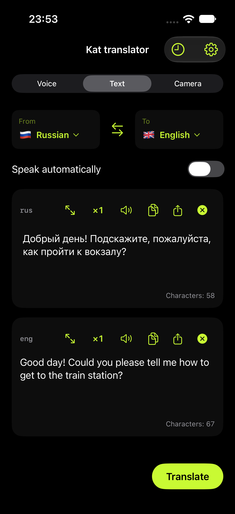
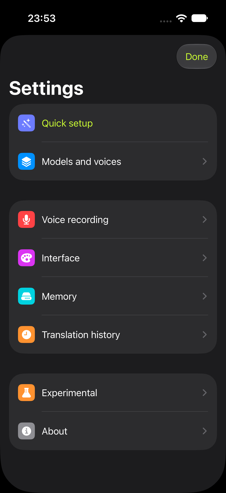
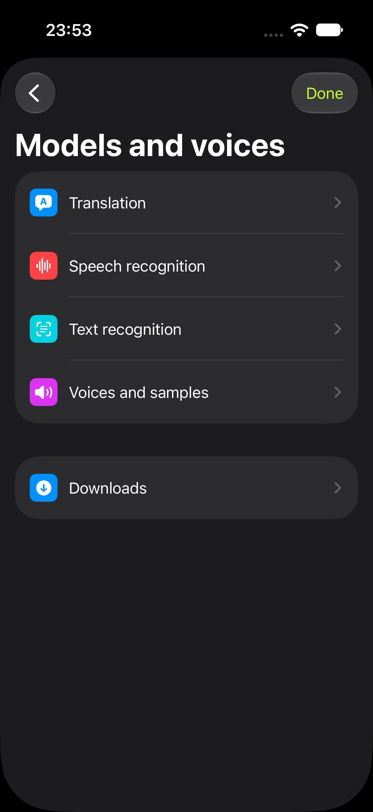

Speak or type
Translate recordings, imported audio and text. Listen to supported translations and share the audio.
Speech, text and words in images — translated with local AI models on iPhone, Apple Silicon Mac and Android.
Choose your languages and download the models you need. Then translate without an internet connection. Your recordings, texts and translation history stay on your device.
Features and available languages vary by platform and model. Downloads require internet access. Check important details against the original.
Translate recordings, imported audio and text. Listen to supported translations and share the audio.
Translate text from camera images on phones or from images and selected screen regions on Mac.
Pick the balance of download size, languages and translation quality that suits your device.
Models, voices and Quick setup now share one settings hierarchy in the development version. These screenshots preview the next update; the Store version may look different.



iPhone 17 Pro simulator, version 1.1.0 (73). Actual UI and translation; screenshot pixels are unchanged. Mac native view previews are identified separately in the gallery.
Kat переводит речь, текст и надписи на изображениях с помощью локальных ИИ-моделей на iPhone, Mac с Apple Silicon и Android. Заранее скачайте нужные модели и голоса — затем интернет для перевода не нужен.
Тексты, записи и история обрабатываются и хранятся на устройстве. Возможности зависят от платформы, языка и выбранной модели; важные числа, имена и условия стоит сверять с оригиналом.
Скриншоты выше показывают готовящееся обновление Apple-версий. В опубликованной версии интерфейс может отличаться.
Все скриншоты на русском →